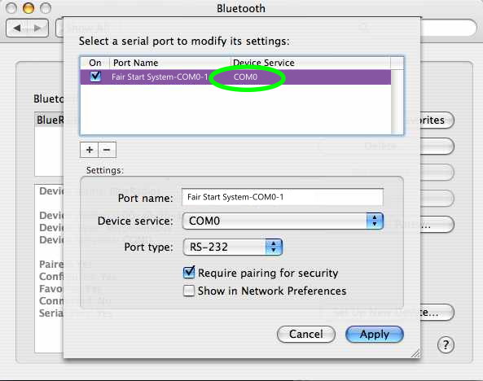

Initial Setup
Power on the Fair Start System by providing 5 volts to the Arduino, servos, and LEDs. A 7 amp (or higher) power supply is needed to guarantee reliable performance across all the components. Once powered on, an indicator on the HC-06 bluetooth module should be blinking. In your computer's bluetooth pairing menu, find the HC-06 and link it to your computer. If a passcode is requested, the default is either 0000 or 1234.
Operating the Application
The Fair Start System is highly automated and designed to work with a single button press. However, the interface requires entering the outgoing serial port that your computer uses to communicate with the HC-06. This feature ensures the application is cross-compatible between operating systems, as well as allows the serial port to change when needed. Once the correct port is identified and entered, press the "Start Race" button to begin race. A countdown of three seconds with corresponding tones and LED patterns will play. Then, after a brief (less than 5 seconds) random amount of time - the box will open, a start tone will sound, and the LEDs will turn green. Finally, 10 seconds later, the door will slowly close and the LEDs will return to red. You are now ready to start the next heat!
Finding the Correct Serial Port
Windows
Find the Bluetooth icon in your taskbar (it may be hidden in the arrow ^) and right click it. Then, select "Open Settings".
Scroll down until you find "More Bluetooth settings" and click on it.
In the new window, click the "COM Ports" tab. Locate the HC-06 connected to the Fair Start System.
Enter the "Outgoing" COM port into the application.
Mac
Navigate to your Bluetooth device list. Select the HC-06 connected to the Fair Start System, then click "Edit Serial Ports".
Note the port in the "Device Service" column.
Enter the COM port into the application.

Linux
Find the HC-06 connected to the Fair Start System in your settings. Copy the address listed.
Open a new terminal and bind the device to an open communications port with: sudo rfcomm bind 0 <bluetooth_address> You may need to specify a different rfcomm port number if 0 is taken.
Enter "/dev/rfcomm0" (or the correct rfcomm port) in the Fair Start System input.